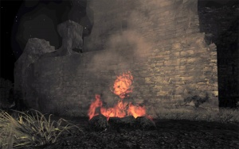

Eric Wilsey
Those Winter Sundays [1962]
Robert Hayden
Sundays too my father got up early
and put his clothes on in the blueblack cold,
then with cracked hands that ached
from labor in the weekday weather made
banked fires blaze. No one ever thanked him.
I'd wake and hear the cold splintering, breaking.
When the rooms were warm, he'd call,
and slowly I would rise and dress,
frearing the chronic angers of that house,
Speaking indifferently to him,
who had driven out the cold,
and polished my good shoes as well.
What did I know, what did I know
of love's austere and lonely offices?
